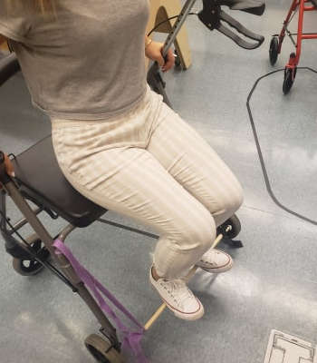
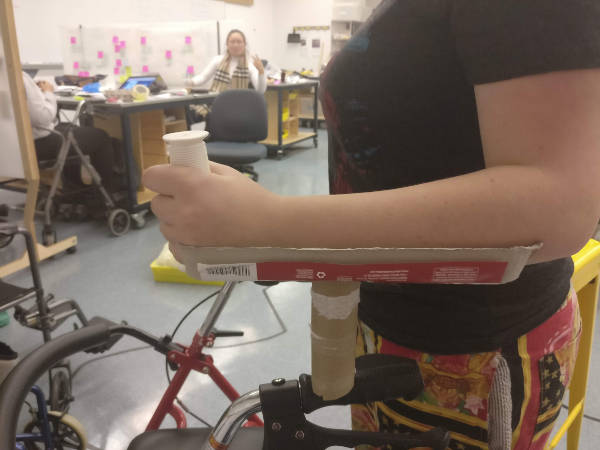
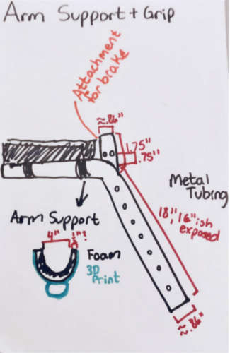
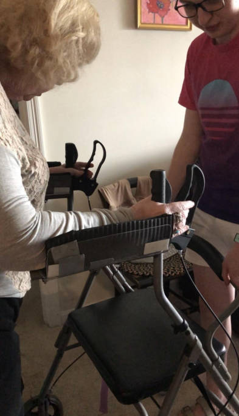
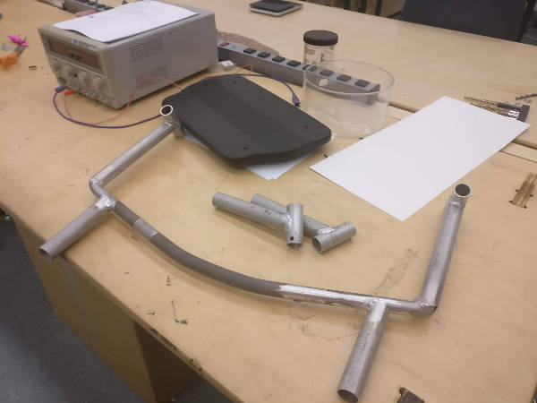

Maeve Stites
B.S. in Electrical and Computer Engineering,
Olin College of Engineering.
Searching for full time engineering or data science role.
Overview
As part of my Engineering for Humanity class, I worked on a team to design the perfect walker for an older adult.
Our team ran through numerous design sessions, experiments, and prototypes to find what made the best walker for our community partner, Nancy (fake name for confidentiality reasons). This was an incredibly rewarding experience to be able to improve the life of someone. Our work had a big impact on her life. The walker enabled her to be more mobile, comfortable, and safe than ever before.
Final Product
Nancy's old walker
Final walker
The final product was a mass produced walker with a number of modifications added by my team. This walker improved on her old walker in a number of ways:
- Extended Height: We extended the height of the walker handles to allow our community partner to walk fully upright. This reduced her back and shoulder pain while walking as well as helping with breathing.
- Extra Handles: Our community partner used the handles on her walker to stand up to accommodate her weak leg strength. We added additional lower handles to enable her to stand up without raising her arms to an uncomfortable level.
- Transport Chair Capabilities: We equipped the walker with foot rests and rear handles to allow it to function as a transport chair. This will make it more convenient for our community partner to recover from surgeries and other medical procedures. Also, having the transport chair functionalities built into the walker will help Nancy to feel confident to go on longer walks, as she can have the reassurance of being able to get pushed if walking becomes too difficult.
- Locking Basket: We added a locking lid to the walker's basket to help our community partner feel safe about the security of her belongings when eating out or sitting in public.
- Wider and more Comfortable Seat: We picked out a walker with a wider seat and added a custom pad with a waterproof fabric. This made the seat more comfortable and supportive for our community partner. On her previous walker, she had to stand up every 20 or so minutes while sitting down due to circulation issues. With her new walker, she no longer has to stand up for circulation issues.
- Higher Backrest: We added a secondary, higher up, backrest in addition to the built-in original backrest. This provided additional back support for our community partner.
My Role
I worked in a variety of roles throughout the course of this project, some of my tasks included:
- Design: I designed a number of items throughout this project. This included the arm rest prototypes, which were an integral part of our experimental process. I designed the lower handles - determining their height and notch angle. I also helped design the bar which served as the backrest and the transport handle attachment point.
- Investigation and Research: I researched existing solutions on the market to get an idea of what may best help our community partner.
- Project Planning: I helped organize the team, set deadlines, and create tasks to keep the project on schedule.
- Observations and Questioning: I played an integral part of the partner research portion of the project. I met with Merrilee many times to observe her daily life and challenges. I asked her a number of questions to get valuable information which helped us decide what would most benefit our community partner.
- Fabrication: I helped fabricate many pieces for both the prototype and final walker. I notched the bars used to create the lower handles. I assisted with welding the rear back rest and transport handlebar. I also milled the pieces used to attach the footrests to the walker wheels.
Project Process
Partner Research
The first stage of this project was partner research. Our team met with Nancy and her husband on multiple occasions to learn more about her and what difficulties she faces in her day to day life. We took extensive notes and asked loads of questions - especially asking a lot of Why? questions. We observed her going through her regular activities, making notes on our observations.
This information allowed us to identify two key problem areas for our community partner:
- Walking: We observed that Nancy had to take many breaks while walking. She had trouble breathing and quickly developed joint pain in her shoulders and back due to the low height and narrow width of the handles on her walker.
- Sitting: Nancy exclusively used her walker to sit in when not at home. Standard chairs were too low and hard for her to use. Her previous walker seat was hard and small. This cut off circulation in her legs, which resulted in her standing up every twenty or so minutes to relieve the pressure on her legs. This was both incontinent for her and she found it embarrassing to have to stand up frequently in public spaces.
Both of these issues were identified as key problem areas because they interfered with our community partner's ability to stay active and social. Nancy prioritized socialization and being able to stay as independent as possible over all else. We wanted to figure out the best way to make this happen.
Experimentation
Once we identified Nancy's key problem areas, we ran a number of experiments to help us find the most effective way to make her life better. A few of these experiments are shown below:
Testing using a "foot hammock" as a way to support Nancy's feet. Experiment both for use in a transport chair and also to alleviate leg pain while sitting.
Rapid footrest prototype.
Testing a different handle design.
Prototyping
Using the information discovered during the partner research and experimentation stages, we were able to choose a final project direction to go in. Our team determined the best way to improve Nancy's life was to build her a walker that fit her unique needs.
Sketch of our prototype base walker.
Sketch of the new arm design to test in our prototype walker.
Nancy using our prototype walker.
Final Design
Using the information learned from having Nancy use our prototype walker, we were able to buy a new walker where we could apply our final modifications.
Final walker with our modifications.
Custom fabricated backrest with handles for transport chair capabilities.